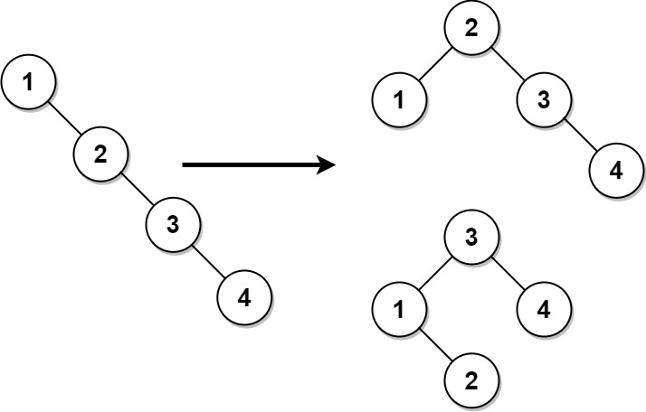
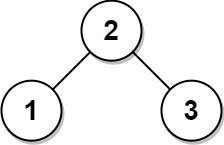

1382. 将二叉搜索树变平衡
中序遍历把 BST 摊平成有序数组，再每次取中点当根、左右递归，重建出平衡 BST。
思路
- 中序遍历 BST 得到严格递增数组——这是重建的唯一输入，原树形状可以完全丢掉。
- 重建：
build(lo, hi)取mid = (lo+hi)/2当根，左半、右半递归；两子树规模差 ≤ 1，天然平衡。 - 新树中序不变，值集合不变，结点数不变；一次收集 + 一次重建，各 O(n)。
图解
最优解
1import java.util.*;2 3class Solution {4 public TreeNode balanceBST(TreeNode root) {5 // 中序遍历得到有序数组，再每次取中点做根：左右规模对半，天然平衡6 List<Integer> vals = new ArrayList<>();7 inorder(root, vals);8 return build(vals, 0, vals.size() - 1);9 }10 11 private void inorder(TreeNode node, List<Integer> vals) {12 if (node == null) return;13 inorder(node.left, vals);14 vals.add(node.val);15 inorder(node.right, vals);16 }17 18 private TreeNode build(List<Integer> vals, int lo, int hi) {19 if (lo > hi) return null;20 int mid = (lo + hi) >>> 1;21 TreeNode node = new TreeNode(vals.get(mid));22 node.left = build(vals, lo, mid - 1);23 node.right = build(vals, mid + 1, hi);24 return node;25 }26}题目
给你一棵二叉搜索树，请你返回一棵 平衡后 的二叉搜索树，新生成的树应该与原来的树有着相同的节点值。如果有多种构造方法，请你返回任意一种。
如果一棵二叉搜索树中，每个节点的两棵子树高度差不超过 1 ，我们就称这棵二叉搜索树是 平衡的 。
示例 1：

输入：root = [1,null,2,null,3,null,4,null,null] 输出：[2,1,3,null,null,null,4] 解释：这不是唯一的正确答案，[3,1,4,null,2,null,null] 也是一个可行的构造方案。
示例 2：

输入: root = [2,1,3] 输出: [2,1,3]
提示：
- 树节点的数目在
[1, 104]范围内。 1 <= Node.val <= 105
题面取自力扣当前版本。
数据快照 2026-11-04。题面版权归力扣所有，本站点仅供本人学习使用，请勿对外发布。